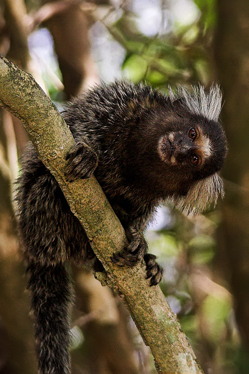

Stefani's Monkey Website
Created by Tydin
The Common Marmoset is a very different type of Monkey. It is often called the Cotton Eared Marmoset. The Marmoset monkeys have a gray body and as they get older they develop white tuffs that extend from the sides of the face. They have a tail that is very long and is gray and white striped. They can be up to 1 pound in size for the males and even less for the females. The males and females often look very similar to each other.The Northeastern coast of Brazil is where you will find the Common Marmoset. Today they are also found in the Southern part of Brazil. They are opportunistic and they will move into new territories when they have the opportunity.They may be found along the edges of forests or all the way into it. They are able to jump long distances and move quickly.Twins are extremely common but there are times when 3 or 4 are born at once.The entire group helps to care for the young. This includes the males and that helps to reduce anxiety among the group. It also helps to reduce the mortality rate. The average life span in the wild is 12 years and 16 in captivity. The diet of the common marmoset consists of spiders, tree sap, bird eggs, and small vertebrates. They will eat well on what they can find and may be picky when food is plentiful. What is very interesting is that they are the only primates other than humans that may suffer from the eating disorder known as Anorexia.
Source here
Common Marmoset
 Read More